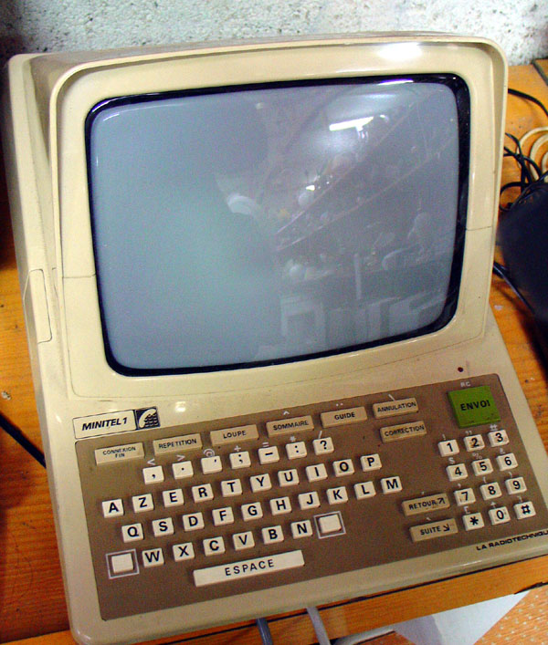
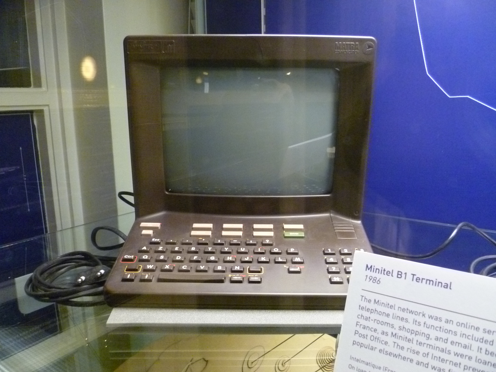
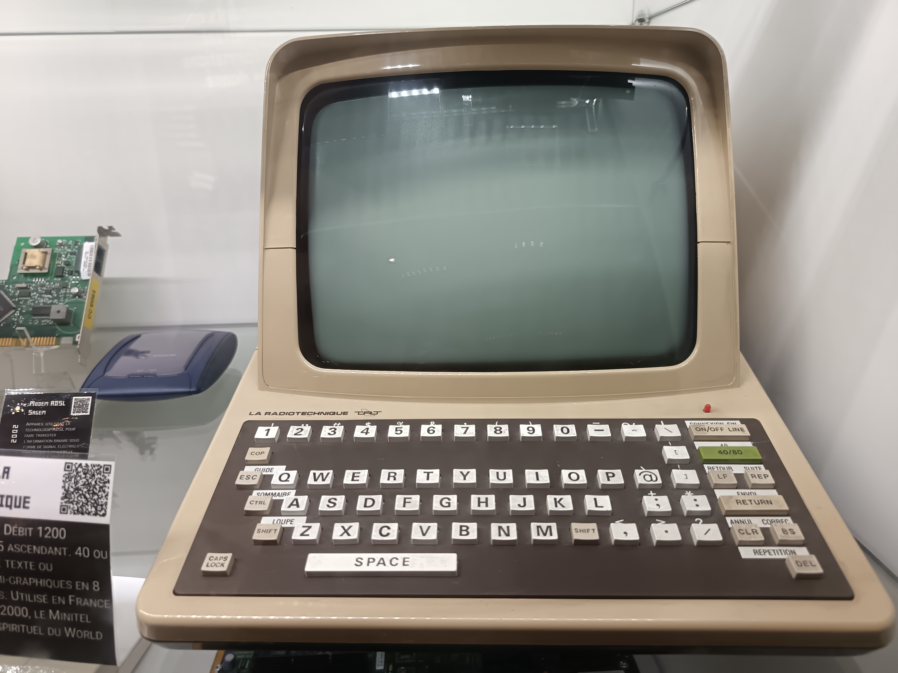

Minitel
The terminal France gave away for free — 9 million keyboards brought a nation online a decade before the Web

Overview
Minitel was a dedicated videotex terminal distributed free to French telephone subscribers starting in 1982. Combining a 9-inch monochrome CRT, an integrated AZERTY keyboard, and a built-in V.23 modem (1200 bps down, 75 bps up), the terminal connected to the Transpac X.25 packet network through local telephone exchanges. By 1993, 6.5 million terminals were in French homes, with 25,000 services available — from phone directories and train reservations to home banking, online shopping, and the infamous "messageries roses" adult chat services that became the first mass-market computer-mediated social phenomenon. The system survived until June 30, 2012, running for three decades.
Deep dive
The 1977 Nora-Minc report L'informatisation de la société coined the term télématique and warned that France risked becoming an information colony of American computing firms. Gérard Théry, director of the DGT, publicly announced the project at Intelcom 79 in Dallas. Bernard Marti's team at the CCETT research center in Rennes built the technical infrastructure. The PTT's strategic logic was simple: printing and distributing paper phone directories cost 500 million francs annually. Giving away terminals would pay for itself.
The Minitel 1 (1982) was a substantial beige ABS plastic appliance — 23 × 25 × 26 cm, 4.6 kg. Its flip-down keyboard folded up to cover the 9-inch monochrome CRT, making it a compact cube when not in use. Inside: an Intel 8052 microcontroller, an EF9345P Videotex display controller, 8.25 KB RAM, and EPROM firmware. The screen displayed 25 rows × 40 columns of text with 8 grayscale levels. The keyboard was full-travel mechanical AZERTY with dedicated function keys: Connexion/Fin (connect/hang up), Envoi (send), Retour (back), Suite (next page), and Sommaire (home). The built-in V.23 modem meant no external box or separate power supply was needed.
Using Minitel required zero computer literacy. The user plugged it in, dialed a short access code (e.g., 3615) on their telephone, heard the modem carrier tone, pressed Connexion/Fin, and hung up the phone. The screen filled with a text-based menu. Users typed numbers to navigate. Pages arrived at ~150 characters per second — a full screen took about 7–8 seconds to fill. The 1984 "kiosk" billing system assigned numeric codes to billing tiers: 3611 for directory assistance, 3614 for user-paid services, 3615 for premium services where France Télécom and the provider split revenue. Billing appeared on the phone bill with no itemization — a privacy feature essential to the chat services' growth.
The first instant messaging was discovered accidentally during the Gretel experiment in Strasbourg (winter 1981) and quickly represented 85% of traffic. By 1990, half of all Minitel calls were to messageries (chat services), dominated by adult chat. Users paid ~60 francs per hour; services employed animatrices to keep users engaged. This was the first mass-market computer-mediated social interaction — millions of French people had their first online conversation through a beige terminal with a built-in modem. Xavier Niel, now billionaire founder of Free/Iliad, started his fortune on Minitel rose.
Minitel peaked in 1993 with 6.5 million terminals, then declined slowly against the Internet. In 2007 it still generated €100M in revenue from 220 million connections. France Télécom shut down the Télétel network on June 30, 2012. The system's longevity stemmed from installed-base inertia (9 million free terminals), simplicity (instant-on, no viruses, no complex OS), and the digital divide (older/rural populations without PCs). Critics called it a French embarrassment that delayed Internet adoption; defenders note it pioneered app stores, user-generated content, online banking, and e-commerce — all before the Web.
Team & pioneers
- Bernard Marti Chief technical architect at CCETT; directed development of the TITAN terminal and Télétel network infrastructure. Coined the term TITAN for the 1977 Berlin demonstration.
- Gérard Théry Director of the DGT (Direction Générale des Télécommunications); championed the project and publicly announced it at Intelcom 79 in Dallas.
- Jean-Paul Maury Director of the "Annuaire Électronique et Minitel" project (1979–1985).
- Simon Nora and Alain Minc Authors of the 1977 report L'informatisation de la société that coined the term télématique and provided the intellectual and political framework.
- France Télécom / PTT French state telecom monopoly that developed, subsidized, and operated the Minitel network from 1982 to 2012.
Media


Sources
- Minitel — Wikipedia
- Minitel — French Wikipedia (detailed technical specs and model history)
- Minitel: The Online World France Built Before the Web — IEEE Spectrum (2017) by Julien Mailland & Kevin Driscoll
- Minitel: Welcome to the Internet — MIT Press (2017) by Mailland & Driscoll
- Minitel: The rise and fall of the France-wide web — BBC News (June 2012) by Hugh Schofield
- Minitel Research Lab, USA — largest digital Minitel museum
- Musée du Minitel — preservation and history
- Bernard Marti: La naissance du Minitel à Rennes — Place Publique Rennes (2011)